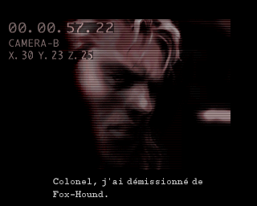
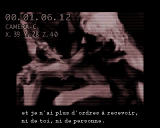

✔ FAIT · TESTÉ
Cinématiques
Toutes les cinématiques du jeu, voix anglaise, sous-titres français calés sur la réplique.
- Les deux versions PAL ont exactement les mêmes blocs audio : le son anglais est recopié dans les cinématiques françaises, bloc par bloc.
- Animations et sous-titres sont ceux de la version française, intacts.

